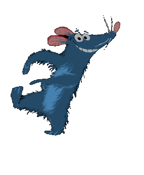

July
18
Tue 7:30 pm ⸺ Orpheum, Vancouver
July
19
Wed 7:30 pm ⸺ Orpheum, Vancouver
PROGRAM
TICKETS
CAST
INFO

Program 
Experience Disney and Pixar's Academy Award®-winning film Ratatouille™ on the big screen while the VSO performs composer Michael Giacchino's beloved score live.
Audiences of all ages love this tale of a determined young rat with a cultivated palate who gets an unlikely chance to do what he dreams of most - cook in a French restaurant in Paris.
Length
130 minutes
1 intermission

01 Le Festin
2:50
Camille, Michael Giacchino
| 01 Le Festin | 06 Wall Rat | 11 A New Deal |
| 02 Welcome to Gusteau's | 07 Cast of Cooks | 12 Remy Drives a Linguini |
| 03 This is Me | 08 A Real Gourmet Kitchen | 13 Colette Shows Him Le Ropes |
| 04 Granny Get Your Gun | 09 Souped Up | |
| 05 100 Rat Dash | 10 Is It Soup Yet? |

Orchestra
Otto Tausk
Music Director
David Bui
RBC Assistant Conductor
Nicholas Wright
First Violin
Timothy Steeves
First Violin
David Lakirovich
First Violin
Jennie Press
First Violin

Jae-Won Bang
First Violin
Rebecca Whitling
First Violin
Yi Zhou
First Violin
Xue Feng Wei
First Violin
Cassandra Bequary
First Violin
Christie Reside
Flute
Dakota Martin
Flute
Karin Walsh
Oboe
Jeanette Jonquil
Clarinet
Michelle Goddard
Clarinet
Rosanne Wieringa
Flute
Aiden Wong
Bass Clarinet
Julia Mockhart
Bassoon
Sophie Dansearu
Contrabassoon
Oliver De Clercq
French Horn
Andrew Mee
French Horn
Holly Bryan
French Horn
William Loveless
French Horn
Larry Knopp
Trumpet
Vincent Vohradsky
Trumpet
Marcus Goddard
Trumpet
Brian Wendel
Trombone
Andrew Poirier
Trombone
Vern Griffiths
Percussion
Michael Jarrett
Percussion